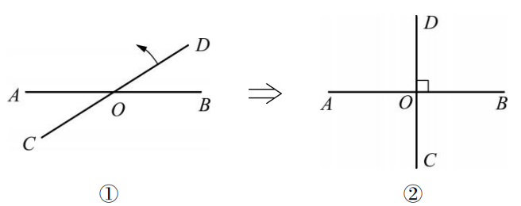
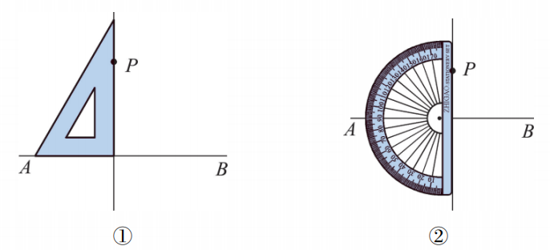
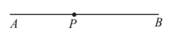
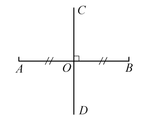
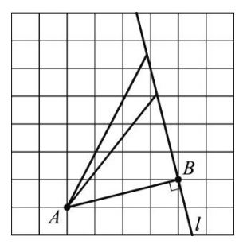
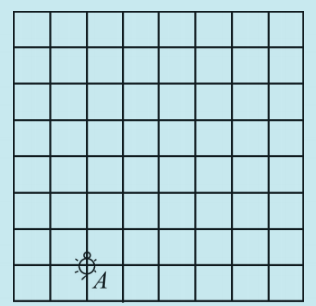
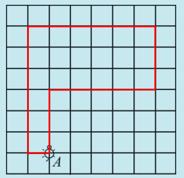
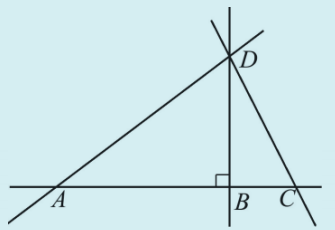
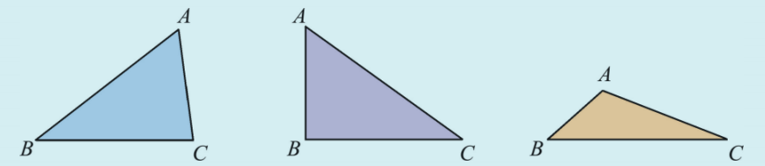
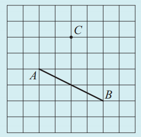

如图4.1.4①，直线 \(AB\) 与 \(CD\) 相交于点 \(O\)。将直线 \(CD\) 绕着点 \(O\) 旋转，使 \(\angle BOD\) 为直角（如图4.1.4②）。此时，两条直线互相垂直。

当两条直线 \(AB, CD\) 相交所成的四个角中有一个为直角时，其他三个角也都成为直角，此时，直线 \(AB, CD\) 互相垂直（perpendicular），记作“\(AB \perp CD\)”，它们的交点 \(O\) 叫做垂足（foot of a perpendicular）。其中一条直线叫做另一条直线的垂线（perpendicular line）。
经过直线 \(AB\) 外一点 \(P\)，按图4.1.6所示的两种方法，画出垂直于直线 \(AB\) 的直线。这样的垂线能画多少条呢？


如图4.1.7，你能经过直线 \(AB\) 上一点 \(P\)，画出垂直于直线 \(AB\) 的直线吗？这样的垂线能画多少条呢？
🔷 垂线的基本事实：
在同一平面内，过一点有且只有一条直线与已知直线垂直。
对于线段的垂线，有一种特殊且重要的情况：如图4.1.8，直线 \(CD\) 经过线段 \(AB\) 的中点 \(O\)，并且垂直于线段 \(AB\)，则 \(AO = BO\)，\(AB \perp CD\)。我们把垂直并且平分一条线段的直线叫做这条线段的垂直平分线（perpendicular bisector），又称中垂线。

在图4.1.9所示的方格图中，点 \(A\) 是直线 \(l\) 外一点，\(AB\) 与直线 \(l\) 垂直，点 \(B\) 为垂足。点 \(A\) 与直线 \(l\) 上各点的距离长短不一，其中最短的是线段 \(AB\)，线段 \(AB\) 叫做点 \(A\) 到直线 \(l\) 的垂线段。从直线外一点到这条直线的垂线段的长度，叫做点到直线的距离。例如，线段 \(AB\) 的长度就是点 \(A\) 到直线 \(l\) 的距离。

体育课上是怎样测量跳远成绩的？你知道其中的原因吗？
跳远成绩测量的是从起跳板到沙坑中最近接触点的垂线段长度，因为垂线段最短，所以这样测量最公平。
如图4.1.10，小海龟位于图中点A处，按下述口令移动：前进3格；向右转 \(90^{\circ}\)，前进5格；向左转 \(90^{\circ}\)，前进3格；向左转 \(90^{\circ}\)，前进6格；向右转 \(90^{\circ}\)，后退6格；最后向右转 \(90^{\circ}\)，前进1格。用粗线将小海龟经过的路线描出来，看一看是什么图形。


1. 如图，\(\angle ABD = 90^{\circ}\)，在下列各语句中填入适当的文字或数字：

（1）点 \(B\) 在直线______上，点 \(D\) 在直线______外；
（2）直线______与直线______相交于点 \(A\)，点 \(D\) 是直线______与直线______的交点，又是直线______与直线______的交点，又是直线______与直线______的交点；
（3）直线______垂直于直线______，垂足为点______；
（4）过点 \(D\) 有且只有______条直线与直线 \(AC\) 垂直。
（1）\(AC\)，\(AC\)；（2）\(AD\)，\(AC\)，\(AD\)，\(CD\)，\(AD\)，\(BD\)，\(BD\)，\(CD\)；（3）\(DB\)，\(AC\)，\(B\)；（4）一。
2. 在如图所示的各个三角形中，分别过点 \(C\) 画出直线 \(AB\) 的垂线，并量出三角形顶点 \(C\) 到直线 \(AB\) 的距离。（精确到 \(1 \mathrm{~mm}\)）

用三角板画垂线，再用刻度尺量出垂线段的长度。具体数值需实际测量。
3. 在如图所示的方格图中，按下述要求画图并回答问题：

（1）过点 \(C\) 画出线段 \(AB\) 的垂线，垂足为点 \(D\)；
（2）量出点 \(C\) 到线段 \(AB\) 所在直线的距离（精确到 \(1 \mathrm{~mm}\)）；
（3）画出线段 \(AB\) 的垂直平分线。
（1）利用方格直接画垂线；（2）垂线段 \(CD\) 的长度即为距离；（3）取 \(AB\) 中点，作垂线。
抽象思想： 从实际物体中抽象出垂直的概念。
数形结合： 利用方格纸画垂线，用刻度尺度量距离。
模型思想： 垂线段最短在实际问题中的应用（如跳远测量）。
🏗️ 建筑中的垂直：墙体与地面垂直，保证房屋稳固。
🚏 人行道与路口：街道交叉处的斑马线通常与道路垂直，方便行人过街。
📐 三角尺：我们用的三角尺就有直角，用来检验垂直。
✨ 垂直是相交的特殊情形，也是构建图形的基础 ✨